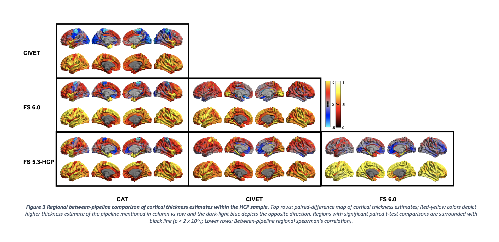
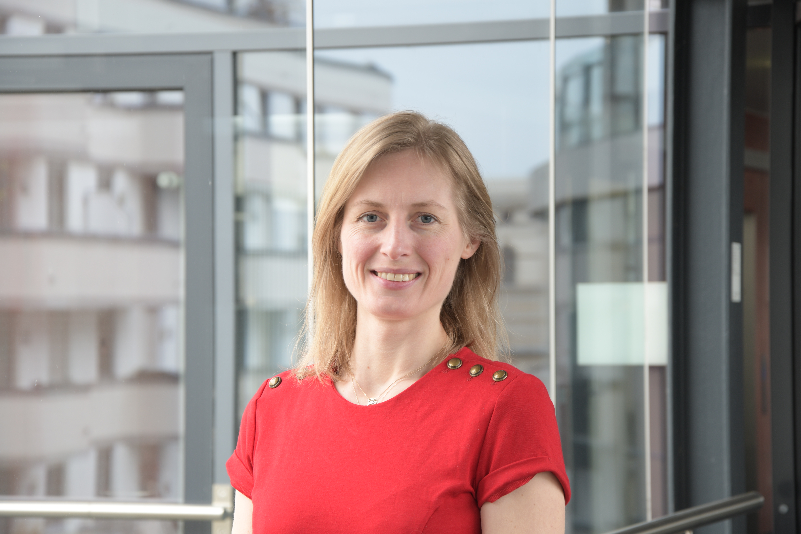

Type Scale
We are situated at the Max Planck Institute for Human Cognitive and Brain Sciences and have strong ties with FZ Jülich, INM-7 and the MICA, MNI, McGill, Montreal .
We investigate how heritable and environmental factors shape brain structure and function, and are very curious about integrative cognition in this context. We dance around this large interdisciplinary question using three different themes that address the interplay of time, genes and environment in human brains.
Carthography
We study the organization of the cerebral cortex using computational neuroanatomy approaches. <\p>  Local stability of cortical thickness measurements.
Cognition
We want to understand how the organization of the human brain relates to cognition. <\p>
 Data-driven latent associations between sleep, BMI, IQ and depression based on cortical thickness.
For details, see e.g. Tahmasian et al. (bioarXiv)
Data-driven latent associations between sleep, BMI, IQ and depression based on cortical thickness.
For details, see e.g. Tahmasian et al. (bioarXiv)
Cognition
Not only do genes and environment shape brain structure and function, time is also an essential factor. Therefor, we study change over time, as well as development/ageing, and evolutionary development.
In addition to assessing the interrelation between behavior and brain across individuals, we assess variation of brain organization across different timescales. In particular, we study variation across evolutionary as well as developmental time, to further understand the nature and nurture of large-scale brain organization.
Connect with our friends and collaborators: Connect with our institute: We are always looking for talented and enthusiastic people to join our lab!
If you are interested in joining, please email
us your CV and a cover letter TEAM Sofie Valk, PhD
Otto Hahn Research Group Leader at CBS MPG
Researcher at FZ Juelich
Neuroimaging | Heritability | Plasticity | Cognition | Autism
email Lina Schaare
Postdoctoral Researcher
Endophenotypes | Multi-modal | Big data
email
Seyma Bayrak
Researcher & Medical Student
Gradients | Plasticity | Structure-Function
email
 Relation between dual origin and large-scale organization of structural covariance in humans and macaques.
For details, see e.g. Valk et al. (bioarXiv)
Relation between dual origin and large-scale organization of structural covariance in humans and macaques.
For details, see e.g. Valk et al. (bioarXiv)
Google scholar
Team
